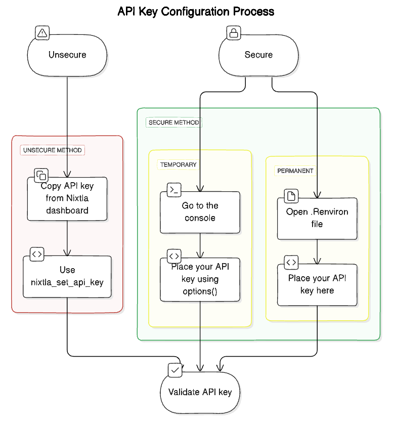

Setting Up Your API Key
setting-up-your-api-key.Rmd
library(nixtlar)
#> Registered S3 method overwritten by 'tsibble':
#> method from
#> as_tibble.grouped_df dplyrThis vignette explains what an API key is, how to get yours and how
to set it up to use nixtlar.
1. What is an API key?
An API key is a unique string of characters that is used to
authenticate your requests when using nixtlar. It is
necessary to have a valid API key to use any of the core functions from
nixtlar that interact with TimeGPT:
# core functions that interact with TimeGPT
- nixtlar::nixtla_client_forecast()
- nixtlar::nixtla_client_historic()
- nixtlar::nixtla_client_detect_anomalies()
- nixtlar::nixtla_client_cross_validation()2. How can I get one?
To obtain you API key, please sign up here: https://dashboard.nixtla.io/
After registering, you will have access to your developer dashboard.
Under API keys, you will find your personal API key. Please
note that your API key should not be shared with others, and it is your
responsability to keep it safe.
3. How do I set up my API key?
There are several methods to set up your API key.
3.1 Using the nixtlar::nixtla_set_api_key function
nixtlar provides a function to directly set up your API
key:
nixtlar::nixtla_set_api_key(api_key = "paste your API key here")Keep in mind that if you close your R session or restart it, then you will need to set up your API key again.
3.2 Using an environment variable
a. Using options
You can set up your API key using options.
options(NIXTLA_API_KEY="paste your API key here")This will make your API key globally available throughout your R session. Although it will not appear in the list of variables, it will persist until you close or restart the session or until you explicitly change it.
To verify that it was set up correctly, use:
getOption("NIXTLA_API_KEY")b. Using .Renviron
For a more persistent method that can be used across different
projects, set up your API key as environment variable. To do this, you
first need to load the usethis package.
library(usethis)
usethis::edit_r_environ()This will open your .Reviron file. Place your API key
here, named NIXTLA_API_KEY.
# Inside the .Renviron file
NIXTLA_API_KEY="paste your API key here"You will need to restart R for the changes to take effect. Note that
modifying the .Renviron file affects all
your R sessions, so if you are not comfortable with this, set your API
key using the nixtlar::nixtla_set_api_key function.

4. Validate your API key (optional)
nixtlar includes a function to validate your API
key.
nixtlar::nixtla_validate_api_key()
#> API key validation successful. Happy forecasting! :)
#> If you have questions or need support, please email ops@nixtla.ioYou do not need to validate your API key every time you set it up,
only when you are unsure of its status. Alternatively, in your
dashboard, under API keys, there is a label next to your
API key indicating its status, for example, active.